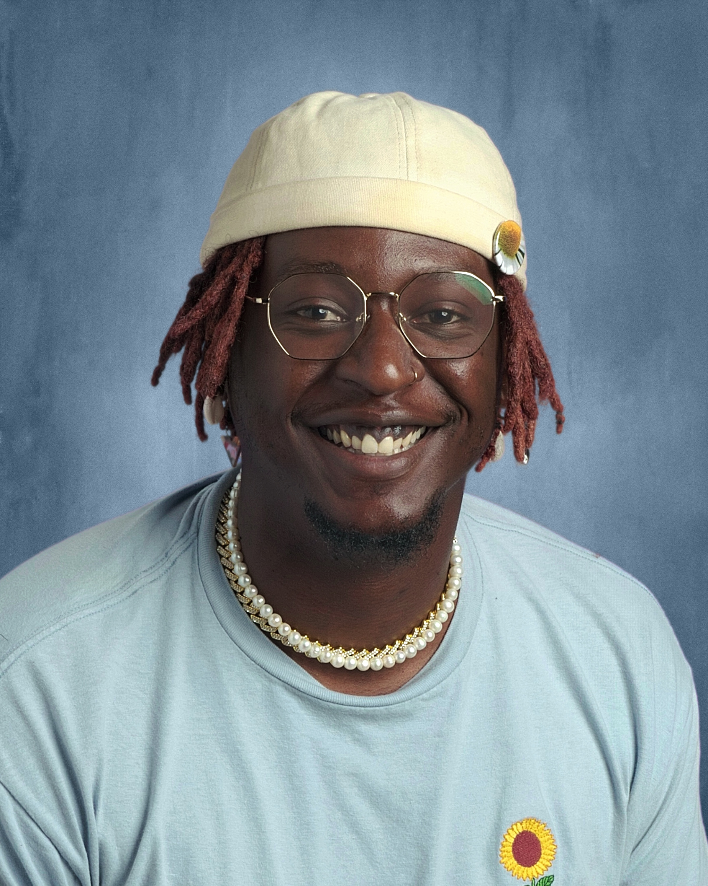

About
Darwin Jean-Charles is a visual Design Student at San Francisco State University. He is originally from Rockland County, NY but relocated to California in 2018, and currently resides in Oakland. Darwin has dabbled in multiple creative forms ranging from illustration, poetry, theatre, and music, and hopes to eventually make his way into film production.